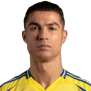
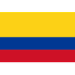

Portogallo fuori dal Mondiale 2026: il derby iberico chiude l'era Ronaldo
Il Portogallo è uscito agli ottavi: 0-1 con la Spagna il 6 luglio, gol di Merino in pieno recupero. Con ogni probabilità era l'ultimo Mondiale di Cristiano Ronaldo.

Come è finita ai Mondiali 2026
Il Portogallo è uscito agli ottavi: 0-1 con la Spagna il 6 luglio, gol di Merino in pieno recupero. Con ogni probabilità era l'ultimo Mondiale di Cristiano Ronaldo.
Il Portogallo ai Mondiali 2026: la situazione
Il cammino ai Mondiali 2026 si è chiuso agli ottavi di finale.
I giocatori chiave
I protagonisti in questo Mondiale per rendimento e minuti giocati.



il Portogallo: le partite ai Mondiali 2026
Il cammino nel torneo finora — 2 vittorie, 2 pareggi e 1 sconfitte.
2026
 SpagnaCasa
SpagnaCasa2026
 CroaziaCasa
CroaziaCasa2026

ColombiaTrasferta2026
 UzbekistanCasa
UzbekistanCasa2026
 RD CongoCasa
RD CongoCasaPunti di forza e debolezze
Punti di forza. Il centrocampo ha retto il confronto anche con la Spagna: la squadra di Martínez è rimasta in partita fino al novantesimo, senza mai crollare.
Debolezze. La solita, fatale mancanza di concretezza: il predominio nel palleggio non si è trasformato in gol proprio nelle partite che pesavano di più.
Gli uomini chiave
Sotto la guida del CT Roberto Martínez, i giocatori simbolo sono Vitinha, Bruno Fernandes, Cristiano Ronaldo. Sono loro a fare la differenza nei momenti decisivi.
La storia ai Mondiali
Mai vincitore di un Mondiale (miglior risultato il terzo posto del 1966). Campione d'Europa 2016 e vincitore della Nations League 2019 e 2025: il ko del 2026 chiude l'era Ronaldo ai Mondiali.
Il bilancio del torneo
Eliminazione bruciante per come è arrivata, al 90'+. Il gruppo di talenti resta, ma la domanda su chi farà i gol se la porta dritta al 2030.
Spagna · quota 1,67Le altre favorite


Domande frequenti
il Portogallo può ancora vincere i Mondiali 2026?
No: l'eliminazione è arrivata agli ottavi di finale (0-1 contro Spagna). Eliminazione bruciante per come è arrivata, al 90'+. Il gruppo di talenti resta, ma la domanda su chi farà i gol se la porta dritta al 2030.
Perché non ci sono più quote sulla vittoria?
Con l'eliminazione i bookmaker hanno chiuso il mercato sulla vittoria finale di questa nazionale.
Chi sono i giocatori chiave del Portogallo?
Tra gli uomini più importanti ci sono Vitinha, Bruno Fernandes, Cristiano Ronaldo, guidati dal CT Roberto Martínez.
Chi è il CT del Portogallo?
Il commissario tecnico è Roberto Martínez.
Il Mondiale del Portogallo è finito il 6 luglio, nel modo più crudele che il calcio conosca: un gol nel recupero, nel derby iberico degli ottavi, firmato da Mikel Merino sei minuti dopo essere entrato in campo. Spagna 1, Portogallo 0. E con quella rete si è chiusa anche un'altra storia, molto più grande della partita: l'ultima Coppa del Mondo di Cristiano Ronaldo.
Com'è arrivata l'eliminazione
I lusitani erano arrivati agli ottavi da imbattuti. Il girone aveva detto luci e ombre — 1-1 con la RD Congo all'esordio, poi il roboante 5-0 all'Uzbekistan e lo 0-0 con la Colombia — e ai trentaduesimi era arrivato un 2-1 alla Croazia che sembrava il segnale della svolta.
Poi la Spagna, all'AT&T Stadium di Dallas. Novanta minuti di equilibrio vero, il Portogallo compatto a togliere il palleggio alla Roja, l'impressione che si andasse ai supplementari. E invece la beffa: Merino, appena entrato, a punire l'unica vera disattenzione della serata. Il copione di sempre — battere chiunque nella singola partita, inciampare nel dettaglio — recitato un'ultima volta.
Perché il Portogallo è uscito
Il guaio, come al solito, non è stato il talento. La rosa restava tra le più profonde del torneo. È mancato il gol: zero reti in due delle ultime tre partite (Colombia e Spagna), con un attacco che contro le difese vere ha prodotto poco.
- Sterilità nei big match: 5-0 all'Uzbekistan, ma zero gol a Colombia e Spagna.
- Il peso degli anni: il capitano non era più quello che spostava le partite da solo, e attorno a lui nessuno si è preso la scena.
- Il dettaglio fatale: novanta minuti perfetti buttati in un'azione. Ai Mondiali si esce così.
L'ultimo ballo di Ronaldo
Va detto senza retorica: con l'eliminazione del 6 luglio finisce la carriera mondiale di Cristiano Ronaldo, alla sua sesta e ultima Coppa del Mondo. Due gol nel torneo, l'ennesimo record di longevità, e il trofeo più importante che resta l'unico buco della bacheca. Il calcio portoghese saluta il suo giocatore più grande senza il lieto fine, e adesso tocca alla generazione dei vari João Neves e Rafael Leão raccogliere un'eredità pesantissima.
I numeri del torneo lusitano
Cinque partite: due vittorie, due pareggi, una sconfitta. Otto gol fatti — cinque in una sola serata con l'Uzbekistan — e tre subiti. Una difesa affidabile, un attacco a intermittenza: il ritratto della squadra vista in campo, capace di dominare le piccole e di spegnersi con le grandi.
E per chi scommette?
Il mercato sul Portogallo campione è chiuso: eliminati agli ottavi, i lusitani non hanno più quote sul titolo. La corsa è rimasta a quattro: Francia (2.49), Spagna (4.30), Inghilterra (4.37) e Argentina (5.63), con le semifinali il 14 e 15 luglio e la finale il 19 al MetLife Stadium.
Ironia della sorte: la Spagna che ha eliminato i lusitani è arrivata fino in semifinale con la miglior difesa del torneo — un solo gol subito — e proprio Merino ha deciso anche il quarto col Belgio. Il Portogallo può almeno dire di essere uscito contro una squadra vera.